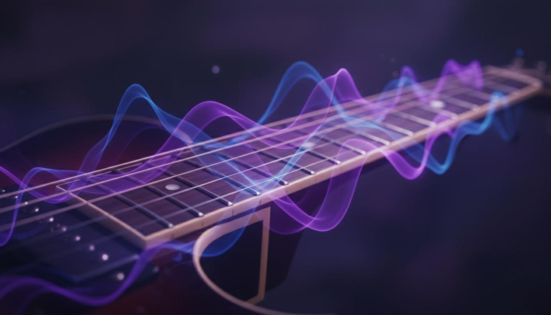
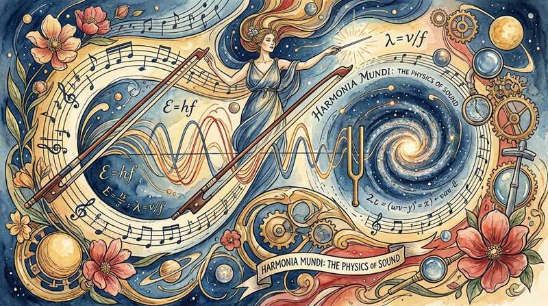

返回课程列表
第二课
静力学基础
琴弦张力与乐器结构的力学平衡
⏱️ 约45分钟
每一件乐器都是精密的力学系统。琴弦的张力、共鸣箱的结构、琴桥的传力——这些都需要精确的力学平衡才能发出美妙的声音。
琴弦的张力分析
琴弦的振动频率由三个因素决定：弦的长度、张力和线密度。调音就是通过改变张力来调整频率。一根标准吉他弦的张力约为70-80牛顿。

弦乐器的调音力学
调音过程中的力学原理：
- 频率公式：f = (1/2L)√(T/μ)，L为弦长，T为张力，μ为线密度
- 调高音：增大张力（拧紧琴轴），频率升高
- 变调夹：缩短有效弦长，所有弦音升高相同音程
- 琴弦材质：钢弦线密度小频率高，尼龙弦线密度大音色柔和
共鸣箱的力学设计
共鸣箱是乐器的放大器。它通过空气腔体的共振来放大琴弦的微弱振动。箱体的形状、材质和厚度都会影响共振特性。

经典乐器的结构力学
不同乐器的结构设计智慧：
- 小提琴：面板用云杉（轻而有弹性），背板用枫木（硬而反射声音），f孔释放空气振动
- 吉他：X型音梁分散面板应力，同时保持振动自由度
- 钢琴：铸铁框架承受约20吨总弦张力，木质音板传递振动
- 大提琴：琴码将弦振动转化为面板振动，音柱连接面板与背板